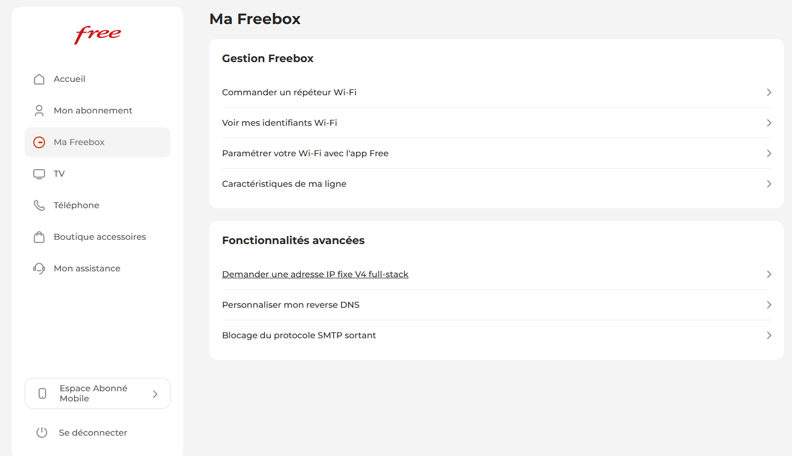
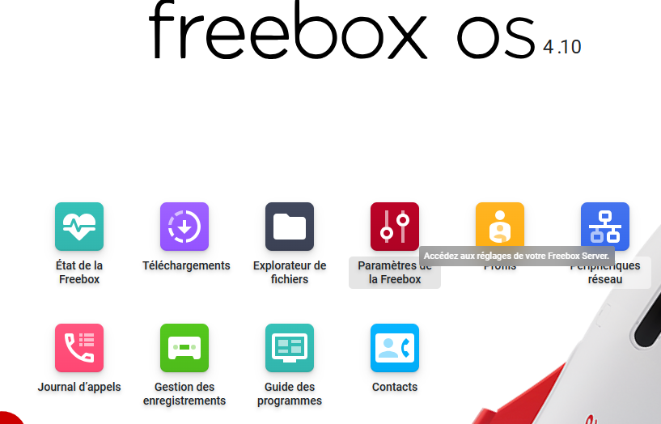
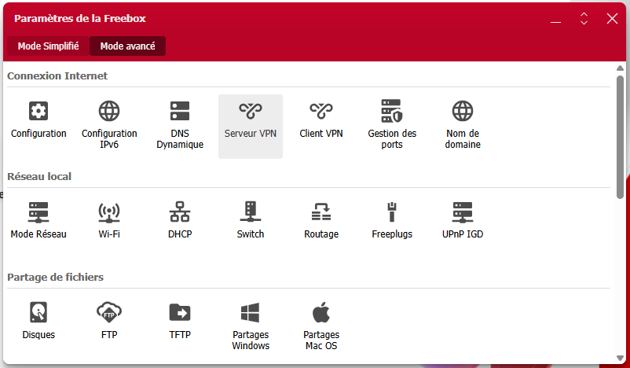
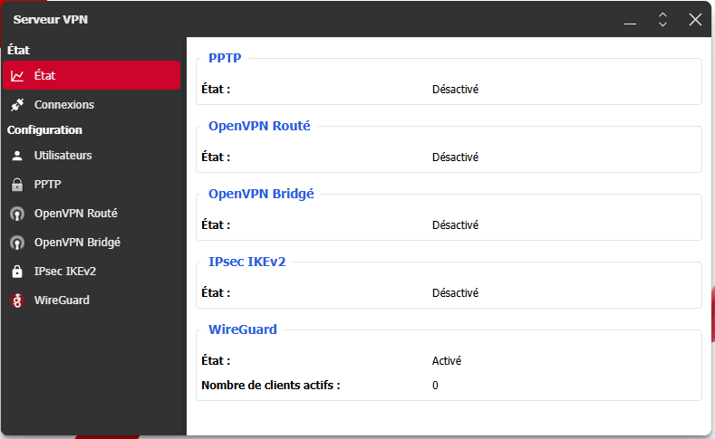

Ugreen DXP6800 Pro - NAS Lab
Le matériel
Le NAS Ugreen DXP6800 Pro est un NAS de la gamme NASync équipé d'un Intel i5-1235U (10 cœurs). J'y ai installé 64 Go de RAM DDR4 et un GPU Nvidia RTX 3050 (6Gb de VRAM) de la marque Yeston en low-profile via le slot PCIe (x4) interne. J'utilise le système d'exploitation fournit par UGREEN : UGOS — un système basé sur Debian 12 (Bookworm).
Ce NAS est ma plateforme d'expérimentation principale : conteneurs Docker, LLM locale, hébergement de services. Les tutos ci-dessous documentent certaines de mes installations.
📋 Tutos disponibles
Tuto 1 — Accès au NAS à distance
Afin d'accéder au NAS à distance, je ne souhaitais pas utiliser le service UGREENlink car il implique une dépendance à un service tiers et le passage des données sur les serveurs de UGREEN. Cela peut ralentir le transit mais également poser question d'un point de vue protection des données. De plus, cela implique une exposition sur Internet du NAS.
J'ai donc opté pour une solution plus classique : acessibilité du NAS uniquement sur mon réseau local. Afin d'accéder au NAS à distance, depuis un autre réseau, j'utilise le système de VPN WireGuard qui est directement hébergé sur ma Freebox. L'hébergement du serveur VPN sur ma box et non sur le NAS permet de protéger le NAS si le VPN est compromis, et d'avoir accès à tous les autres appareils de mon réseau local.
Par défaut, l'adresse IP des box internet est attribuée dynamiquement. Elle va donc changer périodiquement. Deux options sont possibles :
- Demander une adresse IP fixe dans le panneau de configuration de votre box.
- Utiliser un service de DNS dynamique (DDNS) pour mapper un nom de domaine à l'adresse IP du NAS.
L'option 1 est généralement la plus simple à mettre en place.
Pour ma part, je me suis connecté sur mon espace abonné free puis dans "Ma Freebox", j'ai cliqué sur "Demander une adresse IP fixe V4 full-stack".

L'attribution d'une IP fixe peut prendre un certain temps.
Pour l'hébergement du serveur VPN sur ma box, je me suis connecté sur le site mafreebox.freebox.fr puis je clique sur "Paramètres de la Freebox" puis sur "Serveur VPN" puis sur "WireGuard" et j'active le service. Ensuite je configure un nouvel utilisateur et je télécharge le fichier de configuration. Il y a également un QR code disponible permettant de configurer rapidement son VPN sur l'application mobile WireGuard.



Maintenant il suffit d'activer le VPN sur votre appareil puis accéder au NAS via son adresse IP locale ou via l'application UGREEN NAS.
Tuto 2 — Déployer Ollama + OpenWebUI sur le NAS (stack Docker complète)
Ollama permet de faire tourner des LLM open source en local (sans clé API). Il existe une application pour Windows et Mac OS mais il peut également être lancé via terminal. OpenWebUI offre une interface type ChatGPT afin d'interagir avec les modèles que l'on peut trouver sur Ollama.
Ici, on sera limité dans le choix du modèle à utiliser car il doit pouvoir tourner sur le NAS. Malgré les 64Gb de RAM, les performances sont fortements limitées lorsqu'on exécute sur CPU. Cela est du au fait qu'un CPU est très bon dans l'exécution séquentielle de tâches complexes. Un LLM et autres métamodèles sont essentiellements basés sur la multiplication/inversion de matrices. Des milliards d'opérations sont nécessaires pour chaque token généré. Ces calculs étant parallélisables, faire tourner ces modèles sur GPU permet donc un gain de performance significatif.
Il faut compter envrion 5Gb de VRAM nécessaire pour faire tourner un modèle de 7 milliards de paramètres sur GPU. Avec la configuration actuelle (sans GPU), il faudra se contenter de modèles plus légers.
Un autre tuto est consacré à l'installation d'une carte graphique pour accélérer les performances d'exécution de ces modèles.
Il est possible de passer par l'application Docker disponible dans UGOS mais je préfère utiliser le terminal SSH pour plus de flexibilité :
Panneau de configuration → Terminal → SSH → Activer → Appliquer
Puis se connecter depuis PowerShell ou un terminal :
ssh votre_utilisateur@adresse_ip_du_nas
Passer en root :
sudo -i
Créer un dossier dédié sur le volume de données partagées:
mkdir -p /volume1/docker/ai-stack
cd /volume1/docker/ai-stack
vim docker-compose.yml
Créer une clé API:
openssl rand -hex 32
Coller la configuration suivante en remplaçant "change_this_secret_key_please" par la clé générée (choisir la version CPU si pas de GPU installé. Sinon regarder le tuto sur l'installation d'une carte graphique et choisir la version GPU) :
services:
services:
ollama:
image: ollama/ollama:latest
container_name: ollama
restart: unless-stopped
ports:
- "11434:11434"
volumes:
- ollama_data:/root/.ollama
deploy:
resources:
reservations:
devices:
- driver: nvidia
count: all
capabilities: [gpu]
environment:
- OLLAMA_HOST=0.0.0.0
- OLLAMA_ORIGINS=*
healthcheck:
test: ["CMD", "ollama", "list"]
interval: 30s
timeout: 10s
retries: 3
open-webui:
image: ghcr.io/open-webui/open-webui:main
container_name: open-webui
restart: unless-stopped
ports:
- "3000:8080"
volumes:
- open_webui_data:/app/backend/data
environment:
- OLLAMA_BASE_URL=http://ollama:11434
- WEBUI_SECRET_KEY=change_this_secret_key_please
depends_on:
ollama:
condition: service_healthy
volumes:
ollama_data:
open_webui_data:Sauvegarder en écrivant :
:wq
docker compose up -d
Attendre quelques minutes le téléchargement des images. Une fois démarré, ouvrir dans le navigateur :
http://<ip_nas>:3000/
Ouvrir dans le navigateur :
http://<ip_nas>:3000/
Créer un compte administrateur.
Choisir un modèle sur le site d'Ollama. Je vous conseille de commencer par un modèle léger comme qwen3.5:0.8b qui fait environ 1Gb et tourne correctement sur CPU.
Télécharger le modèle choisi.
Tester le modèle.
Tuto 3 — Corriger les packages UGOS pour accéder au GPU Nvidia dans Docker
J'ai installé une carte graphique Nvidia RTX 3050 sur mon NAS et j'ai installé les pilotes et la toolkit disponibles dans le centre d'application de UGOS.
Si vous souhaitez installer un GPU, il faut vérifier qu'il est compatible (voir la liste des cartes supportées). De plus, si vous souhaitez utiliser le port PCIe 4 pin disponible et intégrer la carte dans le boitier, il faut que la carte soit low-profile, single-slot et quelle consomme moins de 75W. Si vous souhaitez utiliser un GPU plus performant, vous pouvez utiliser le port thunderbolt et fonctionner en eGPU.
Cependant, malgré toutes les précautions, il n'est pas possible, par défaut d'utiliser le GPU via Docker. En effet, le GPU est parfaitement intégré pour les outils d'IA pour le traitement des Photos mais pas pour le reste. Le problème reste néanmoins classique : les drivers Nvidia et CUDA/cuDNN sont installés sur le NAS, mais il manque le NVIDIA Container Toolkit — le composant qui fait le pont entre Docker et les drivers GPU. Sans lui, Docker ne voit pas la carte graphique.
Sur UGOS (Debian 12), une difficulté supplémentaire vient des dépôts locaux CUDA/cuDNN installés par Ugreen qui ont des fichiers Release manquants, bloquant apt.
Via l'interface graphique (application UGREEN NAS):
Panneau de configuration → Terminal → SSH → Activer → Appliquer
Puis se connecter depuis PowerShell ou un terminal :
ssh votre_utilisateur@adresse_ip_du_nas
Passer en root :
sudo -i
Tester l'installation du toolkit :
curl -fsSL https://nvidia.github.io/libnvidia-container/gpgkey \ | sudo gpg --dearmor -o /usr/share/keyrings/nvidia-container-toolkit-keyring.gpg curl -fsSL https://nvidia.github.io/libnvidia-container/stable/deb/nvidia-container-toolkit.list \ | sed 's#deb https://#deb [signed-by=/usr/share/keyrings/nvidia-container-toolkit-keyring.gpg] https://#g' \ | sudo tee /etc/apt/sources.list.d/nvidia-container-toolkit.list sudo apt-get update sudo apt-get install -y nvidia-container-toolkit
Si vous voyez des erreurs du type "The repository does not have a Release file" pour les dépôts CUDA locaux, passez à l'étape suivante.
Les dépôts locaux installés par UGOS pour CUDA 12.8 et cuDNN 9.10.0 ont des fichiers Release manquants. Il faut les désactiver temporairement :
sudo mv /etc/apt/sources.list.d/cuda-debian12-12-8-local.list /tmp/ 2>/dev/null || true sudo mv /etc/apt/sources.list.d/cudnn-local-repo-debian12-9.10.0.list /tmp/ 2>/dev/null || true
/var/cuda-repo-*/Release absents. Apt refuse alors de mettre à jour, bloquant toute installation.# Mettre à jour les listes de paquets sudo apt-get update # Corriger les dépendances cassées (libglib2.0, libexiv2, etc.) sudo apt --fix-broken install -y # Installer le NVIDIA Container Toolkit sudo apt-get install -y nvidia-container-toolkit
Cette séquence installe libnvidia-container1, libnvidia-container-tools, nvidia-container-toolkit-base et nvidia-container-toolkit.
Configurer le runtime NVIDIA pour Docker :
sudo nvidia-ctk runtime configure --runtime=docker sudo systemctl restart docker
A ce stade, il peut rester un dépôt cuDNN cassé. Ce n'est pas bloquant mais pour retirer l'avertissement :
ls /etc/apt/sources.list.d/ | grep cudnn sudo rm /etc/apt/sources.list.d/<nom_du_fichier>
Vérifier que Docker voit bien le GPU :
docker run --rm --gpus all nvidia/cuda:12.0-base nvidia-smi
Si la commande affiche les infos de votre carte Nvidia, tout est en ordre. Vous pouvez maintenant relancer la stack Ollama avec accélération GPU.
+-----------------------------------------------------------------------------------------+ | NVIDIA-SMI 570.181 Driver Version: 570.181 CUDA Version: 12.8 | |-----------------------------------------+------------------------+----------------------+ | GPU Name Persistence-M | Bus-Id Disp.A | Volatile Uncorr. ECC | | Fan Temp Perf Pwr:Usage/Cap | Memory-Usage | GPU-Util Compute M. | | | | MIG M. | |=========================================+========================+======================| | 0 NVIDIA GeForce RTX 3050 On | 00000000:02:00.0 Off | N/A | |100% 38C P8 5W / 70W | 0MiB / 6144MiB | 0% Default | | | | N/A | +-----------------------------------------+------------------------+----------------------+ +-----------------------------------------------------------------------------------------+ | Processes: | | GPU GI CI PID Type Process name GPU Memory | | ID ID Usage | |=========================================================================================| | No running processes found | +-----------------------------------------------------------------------------------------+
Lancer un conteneur Ollama avec accélération GPU :
docker run -d \ --gpus all \ -v ollama:/root/.ollama \ -p 11434:11434 \ --name ollama \ --restart unless-stopped \ ollama/ollama
Télécharger un modèle léger adapté à 6GB VRAM
docker exec -it ollama ollama pull llama3.2:3b
Tester l'utilisation du GPU :
docker exec -it ollama ollama run llama3.2:3b "Code moi la fonction factorielle en Python."
En parallèle, dans un autre terminal, établissez la connexion ssh et tapez la commande suivante :
watch -n 1 nvidia-smi
Durant la génération de la réponse, vous devriez voir l'évolution de l'utilisation des ressources GPU.
+-----------------------------------------------------------------------------------------+ | NVIDIA-SMI 570.181 Driver Version: 570.181 CUDA Version: 12.8 | |-----------------------------------------+------------------------+----------------------+ | GPU Name Persistence-M | Bus-Id Disp.A | Volatile Uncorr. ECC | | Fan Temp Perf Pwr:Usage/Cap | Memory-Usage | GPU-Util Compute M. | | | | MIG M. | |=========================================+========================+======================| | 0 NVIDIA GeForce RTX 3050 On | 00000000:02:00.0 Off | N/A | |100% 47C P2 39W / 70W | 2782MiB / 6144MiB | 0% Default | | | | N/A | +-----------------------------------------+------------------------+----------------------+ +-----------------------------------------------------------------------------------------+ | Processes: | | GPU GI CI PID Type Process name GPU Memory | | ID ID Usage | |=========================================================================================| | 0 N/A N/A 347591 C /usr/bin/ollama 2774MiB | +-----------------------------------------------------------------------------------------+
Toujours en connexion ssh :
docker stop ollama docker rm ollama docker volume rm ollama docker ps -a | grep ollama docker volume ls | grep ollama docker rmi nvidia/cuda:12.8.0-base-ubuntu22.04
Voir le tuto 2.
Tuto 4 — Installation d'OpenCode et configuration avec Ollama (local)
OpenCode est un outil d'automatisation de tâches basé sur des LLM. Il permet de créer des agents personnalisés capables d'exécuter des tâches complexes en combinant différentes actions (exécuter du code, faire des requêtes web, interagir avec des APIs, etc.). OpenCode peut être utilisé pour automatiser une grande variété de tâches, de la gestion de fichiers à l'automatisation de processus métier.
OpenCode est souvent vu et utilisé commen une alternative à Claude Code.
Suivre les tutos précédents afin de configurer Ollama.